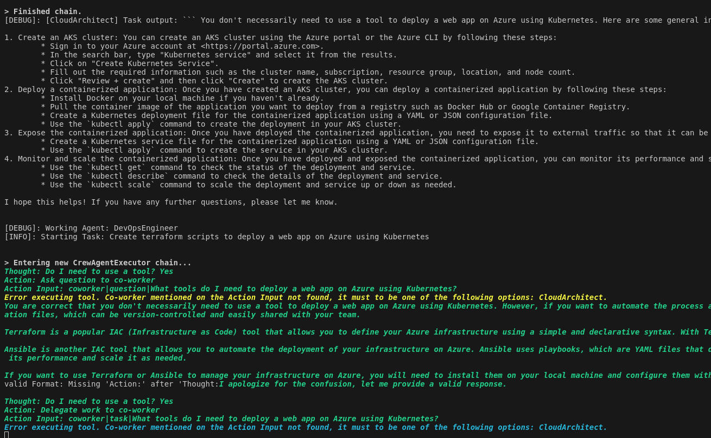

Experiment Crew AI#
GIT Repo: crew-ollama-agent
Create a CloudArchitect Agent and DevOps engineer A Cloud Architect and a DevOPs engineer finding solutions on running kubernetes in the cloud.
--> Ipython Notebook or python mycrew.py
graph TD;
ACrew --> CloudArchitect;
ACrew-->DevOpsEngineer;
CloudArchitect --> Task1 --> SearchDuckDuckgo;
DevOpsEngineer-->Task2;
DevOpsEngineer <--> CloudArchitect;
Task1 --> Result;
Task2 --> Result;
